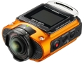

无忌
器材库
全部器材
产品年表
名词百科
榜单
器材库
> 不可换镜头数码相机 > WG-M2

理光
WG-M2
分类
不可换镜头数码相机
点评
0 条
图片
0 张
评测
0 篇
这是一款小型、轻量的机身配以优秀的防水、耐冲击性能的同时，还能超广角拍摄近似于临场感的高画质4K动画的高端运动型相机。
产品类型
不可换镜头数码相机
综合评分
暂无评分
无忌评测
暂无评测
规格参数
网友点评
(0)
产品图 / 样片
(0)
评测文章
(0)
规格总览
发布日期
2016-02-23
防水
是
影像规格
影像传感器
CMOS
影像传感器尺寸
1/2.3英寸
有效像素
约800万
静态图像格式
JPEG
静态图像尺寸
[4:3] 8M: 3264×2448, 5M: 2592×1944[16:9] 6M: 3264×1840, 4M: 2592×1464[1:1] 6M:2448×2448
画幅比
4:3, 16:9, 1:1
短片格式
MPEG4-AVC/H.264
短片尺寸
4K(3840x2160:30fps), Full HD(1920x1080:60fps/30fps), HD(1280x720:120fps/60fps/30fps)
防抖系统
电子防抖功能(Movie SR)
镜头和对焦
镜头结构
8片/8组
焦距
1.6mm
等效35mm画幅焦距
9.0mm
最大光圈
f/2
最近对焦距离
20cm
曝光控制
测光模式
评价测光, 点测光
曝光模式
程序自动曝光
快门速度
1/24000秒 - 1/4秒
曝光补偿
±2EV以1/2EV级调整
ISO感光度
静态图像：ISO AUTO /AUTO-Hi /200 /400 /800 /1600 /3200 /6400动画：ISO AUTO /AUTO-Hi
连拍
最高约8张/秒
取景规格
LCD尺寸
1.5英寸
LCD像素
11.5万
文件输入/输出
内置存储容量
约68MB
存储卡
microSD, microSDHC, microSDXC
数据接口
USB2.0
视频/音频接口
HDMI 输出
电源
电池
锂离子充电电池D-LI68
续航能力
拍照张数约450张影片录制时间约80分钟回放时间约160分钟
外观
颜色
银色, 橙色
尺寸
57.4×34.1×77.8mm
重量
仅机身约114g
该产品暂无存档的网友点评
该产品暂无存档的产品图
评测 / 相关文章
该产品暂无存档的评测文章
相关文章
［试用］三防机的妙用 超级行车记录仪WG-M2
（原站已下线）
［资讯］真正可靠表现 理光WG-M2运动型相机新上市
（原站已下线）